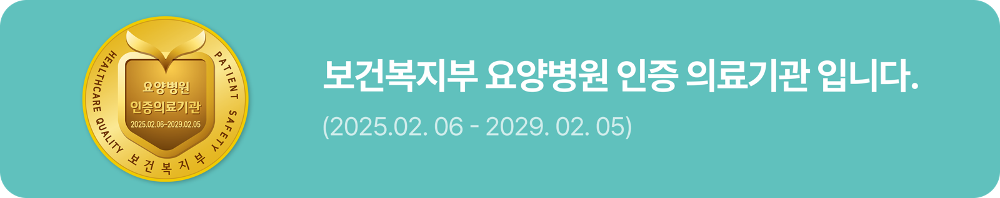

하일렌요양병원은 전남광주 서구에 있는 암요양병원으로, 암 치료 과정의 회복을 돕는 곳입니다.
암 치료 자체는 현재 진료중인 대학병원에서 이어지고, 그 사이의 회복은 하일렌요양병원이 입원과 외래로 관리합니다. 자체 응급실은 없으며, 응급 상황은 발견 뒤 초기 안정화를 거쳐 상급 치료병원으로 신속히 전원합니다. [디렉터 확인] 응급실 없음 문장의 표현(D2 #21, 병원장님). 이 자리가 전 페이지 한계 상자의 정본이며 다른 페이지는 링크만 둡니다
[디렉터 확인] 정체성 표기 정본 — 「암중점 메디컬 레지던스」 / 「암중점 하일렌요양병원」 / 「전남광주 서구 암요양병원」 중 하나. 「메디컬 레지던스」를 쓰기로 하면 환자·보호자가 쓰는 말(암요양병원)로 풀어 주는 한 줄을 첫 화면에 둘지, 띄어쓰기는 머리글 표기 「메디컬 레지던스」로 통일할지 함께 결정
지금 어느 시기에 계신가요
시기에 맞는 안내 페이지로 바로 갑니다. [디렉터 확인] 시기 진입 블록 수 — 시기 3개로 묶을지, 가을호 뒷면 「치료의 모든 시기」 7항 그대로일지(D2 #22). 7항으로 두면 「진행성 암｜통증과 증상 완화에 집중합니다」와 「림프 관리｜치료 시기와 관계없이 림프부종 관리를 꾸준히 이어갑니다」 행이 들어갑니다 [디렉터 확인] 가을호 뒷면 5항 「면역·림프 관리」 문구의 소식지 수정 여부(D2 #43)

수술 후 회복
통증·상처·합병증을 세심하게 관리합니다. 입원 서류와 병실, 치료식을 안내합니다.
항암·방사선 치료 중
발열·메스꺼움(오심)·피로 등 부작용 증상을 관리합니다. 치료 일정 사이에는 1박 2일부터 단기입원으로 이용할 수 있습니다.
치료 후 외래·단기입원
떨어진 체력과 신체 기능 회복을 돕습니다. 외래 회복치료와 단기입원을 안내합니다.


상담
궁금한 점 있으시면 언제든 물어보세요. 카카오톡 채널에서 입원 상담 및 프로그램 예약이 가능합니다. 단기입원 예약접수 받습니다. [디렉터 확인] 카카오톡 채널 정식 주소 — pf.kakao.com/_hrVAG 와 m.site.naver.com/24I9W 중 하나 [디렉터 확인] 인스타그램 대표 계정 — heilen_medical / heilen_hospital / heilen4391000 중 하나(D2 #64). 확정 뒤 Hospital JSON-LD sameAs와 푸터에 같은 계정을 넣습니다

입원·외래·단기입원 상담은 원내 상담실에서 안내합니다. [디렉터 확인] 전화·카카오 응대 가능 시간, 부재중일 때 재연락 방식(D2 9-1 신설 행)
소식과 안내 글은 공식 블로그와 공식 유튜브에서도 보실 수 있습니다.
제공 하일렌요양병원 · 검토 [디렉터 확인] 검토 의료진 · 검토일 [디렉터 확인] 검토일 · 갱신 2026-10-05 · 출처 하일렌 소식지 2026 가을호 뒷면 「치료의 모든 시기」 1~3항과 「단기입원 예약접수 받습니다」(「완화합니다」는 「관리합니다」로, 「오심」은 「메스꺼움(오심)」으로 고침, 5항은 「면역·」와 「면역력 증진과」를 빼고 「림프 관리｜림프부종」으로), 2026년 10월 프로그램 공지 정체성 문장(첫 문장은 합니다체 원문, 둘째 문장은 B-25·B-10 기반 작성, 셋째 문장은 B-6·B-7-1 응급 3단계 기반 작성), 발행정본 B-7-1 확정 표기·B-24 간병 경계 문장, 채널 링크 지도(공식 블로그·유튜브 주소) · [디렉터 확인] title·description 문안 확정 · [디렉터 확인] 현재 메인 배너 게시 내용(교체 전 대조)